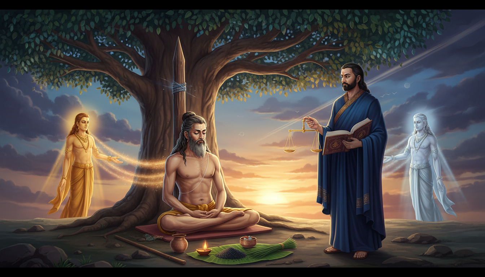

जीवन कभी-कभी किसी को एक ही घटना से समाप्त नहीं करता। वह उसे उस घटना के भीतर खड़ा रख देता है—एक झूठे आरोप ने, लंबी बीमारी ने, एक कानूनी नोटिस ने, परिवार के एक दबे हुए राज़ ने या बचपन के उस अपराधबोध ने जो सालों बाद भी मरने का नाम नहीं लेता। घाव शरीर को नहीं मारता, लेकिन आत्मविश्वास, रीढ़ की हड्डी, नींद और ईश्वरीय न्याय पर विश्वास के भीतर से गुजर जाता है।

महर्षि मांडव्य की कथा इसी पीड़ा का वैदिक उत्तर है। वे निर्दोष थे, फिर भी उन्हें शूल पर चढ़ाया गया। वे ध्यानस्थ साधक थे, फिर भी उनका शरीर राज्य की सख़्ती का सार्वजनिक प्रतीक बन गया। जब उन्होंने धर्मराज से पूछा कि ऐसा दंड क्यों मिला, तो उत्तर भी विचित्र था—बचपन में कीड़े-मकोड़ों को सताने का कर्म। मांडव्य स्वयं को दोषी मानकर टूट नहीं गए। उन्होंने ऊपर एक प्रश्न उठाया: क्या बच्चे को वयस्क के पूरे कर्म भार के बराबर दंड मिल सकता है? उनके इस प्रश्न ने महाभारत की परंपरा में न्याय, अनुपात और अंधश्रद्धापूर्ण दंड की सीमा को लेकर गहरा शास्त्रीय आधार दिया।
यह लेख मांडव्य की कथा को एक व्यावहारिक उपाय-प्रणाली में बदलता है। यह उन पाठकों के लिए है जो झूठे आरोप, लंबा इंसाफ, शनि दशा, पुराना अपराधबोध, पीठ या नसों की बीमारी, पैतृक भय और अनुभव कर रहे हैं कि उनका जीवन अन्याय से चल रहा है। यहाँ मिथक, ज्योतिष, धर्मदर्शन, आयुर्वेद, शनि उपाय और कुछ सीमित गूढ़ रक्षा-अभ्यास एक साथ रखे गए हैं। कृपया इन उपायों को चिकित्सक, वकील और मानसिक स्वास्थ्य विशेषज्ञ की सलाह के साथ ही अपनाएँ। ये साहस और स्पष्टता बढ़ाने के लिए हैं, इलाज या कानूनी सहायता का विकल्प नहीं।
१. कथा: जिन साधु ने शूल को तपस्या का आसन बना दिया
मांडव्य ऋषि गहरे ध्यान के लिए प्रसिद्ध थे। एक दिन जब वे वृक्ष के नीचे मौन बैठे थे, तो चोर उनके आश्रम में घुसकर लूट का सामान लेकर छिप गए।
शीघ्र ही राजा के सैनिक वहाँ पहुँचे और उन्होंने मांडव्य से पूछा कि चोर किस दिशा में गए। ऋषि ध्यान में लीन थे। कुछ कथाओं में उन्होंने इसलिए उत्तर नहीं दिया कि उन्होंने चोरों को भागते नहीं देखा था। कुछ में उनका मौन ही उस गलतफहमी का बीज बन गया। सेना ने आश्रम खोजा, चोरों को पाया और सबको पकड़ लिया। राजा ने तथ्यों की जाँच किए बिना साधु को हत्यारोपी के समान दंड देने का आदेश दिया—शूल देना।
अब कथा का हृदय आता है। मांडव्य मरे नहीं। शूल शरीर के भीतर रहा, लेकिन उनका ध्यान नहीं टूटा। काल बीता। शूल पर पक्षी आए और उन्होंने घोंसला बनाया। एक निर्दोष साधक जीवित था, जाग रहा था, लेकिन बिना सहायता के अपना दंड हटा नहीं सकता था।
कालांतर में दूसरे ऋषि ने पक्षियों को देखा और समझा कि यह साधु अभी भी जीवित है। राजा को सूचना मिली, भूल सामने आई और मांडव्य को मुक्त किया गया। लेकिन शूल का एक भाग शरीर में रह गया। इसी कारण वे अनि-मांडव्य कहलाए—जिनके भीतर शूल है।
राजा ने क्षमा माँगी। मांडव्य ने उसे क्षमा भी किया, पर उन्होंने यह नहीं माना कि उनकी पीड़ा का कोई कारण ही नहीं था। बाद में वे धर्मराज के पास गए और पूछा कि निर्दोष होकर इतना दंड क्यों मिला। धर्मराज ने कहा कि बचपन में मांडव्य ने कीड़ों को सताया था, इसलिए यह परिणाम आया।
यहाँ मांडव्य का उत्तर गहरा है। उन्होंने यह नहीं कहा कि “मैं कर्म से ऊपर हूँ।” उन्होंने कहा—बच्चे में पूरी समझ नहीं होती, इसलिए बच्चे की अज्ञानता को वयस्क अपराध के समान दंड नहीं दिया जा सकता। दंड में आयु, भाव, ज्ञान और अनुपात देखना अनिवार्य है। फिर उन्होंने धर्म को एक सख़्त निर्देश दिया कि वह स्वयं मानव योनि में जन्म लेकर पृथ्वी के न्याय की कठिनाइयों को अनुभव करें। महाभारत की परंपरा में यह कथा विदुर के जन्म से जुड़ी है—वे राज-गरिमा से बाहर जन्मे विवेकी मंत्री बने—वे कुरु सभा में अप्रिय सत्य कहने से नहीं डरते थे।
शूल मांडव्य की पहचान नहीं बना। उनकी स्पष्टता बनी।
२. यह कथा आधुनिक मन को क्यों पकड़ती है
मांडव्य की कथा एक साथ कई दर्द छूती है।
| आधुनिक वेदना | शूल से इसका संबंध | मांडव्य की शिक्षा |
|---|---|---|
| झूठा आरोप | लोग सत्य जानने से पहले दंड देखते हैं | मौन दोष नहीं है; सत्य को धैर्य और अनुपात से कहना है |
| पुरानी पीठ या नस की पीड़ा | शरीर छलनी हुआ महसूस करता है | उपचार गर्मजोशी, व्यावहारिक सहायता और आत्मसम्मान से शुरू होता है |
| कानूनी या कार्यालयी विलंब | इंसाफ अपमान से धीमा चलता है | शनि का समय कठिन है, पर प्रमाण, अनुशासन और धर्म फल देते हैं |
| बचपन का अपराधबोध | एक पुरानी गलती बार-बार खुद को याद दिलाती है | बच्चे की अज्ञानता को मार्गदर्शन चाहिए, जीवनभर का दंड नहीं |
| सख़्त आत्मदंड | दूसरों का दंड बंद हो चुका, अपना दंड चालू रहता है | धर्म में अनुग्रह, विकास और प्रायश्चित है |
| पैतृक भय | कुल का कर्म विरासत में मिला शूल जैसा लगता है | विरासत में मिले भय को चेतन उत्तरदायित्व में बदलें |
यह कथा आपसे निरुत्साह की भिक्षा नहीं माँगती। यह आपसे इतनी स्थिरता माँगती है कि किसी झूठी कथा को आपका भीतरी शासक न बनने दिया जाए।
३. दर्शन: धर्म अंधा दंड नहीं है
मांडव्य का धर्मराज से संवाद चार सिद्धांत रखता है जो आज भी उपयोगी हैं।
१. दंड में अनुपात हो
बच्चा अज्ञानता में कीड़े सताए, तो उपयुक्त उपाय दया-शिक्षा और प्रायश्चित है; वयस्क हिंसा के लिए बना शूल दंड नहीं। जब परिवार, कार्यालय या मन छोटी गलती को सबसे बड़ा दंड देता है, तो वह धर्म नहीं चला रहा होता। वह धर्म का वेश धरे भय चला रहा होता है।
२. कर्म समझ से भोगा जाता है
कर्म यह नहीं कहता, “तुमने गलती की, इसलिए अब हमेशा दुखी रहो।” वैदिक दृष्टि में कर्म परिणामों का क्षेत्र है जिसे जागरूकता, करुणा, अनुशासन, सेवा और समझदारी से शुद्ध किया जा सकता है। उद्देश्य जिम्मेदारी से भागना नहीं है। उद्देश्य वह प्रतिक्रिया करना है जो वास्तव में घाव भरे।
३. धर्म को सीमा चाहिए
मांडव्य ने केवल क्षमा करके चुप नहीं बैठ गए। उन्होंने धर्मराज से प्रश्न किया। कुछ अध्यात्म घायल व्यक्ति को हर अन्याय चुपचाप स्वीकार करने को कहता है। मांडव्य इससे आगे जाते हैं: मानव राजा को क्षमा करो, पर सिद्धांत को प्रश्न करो। धर्म तभी परिपक्व होता है जब पीड़ित बिना क्रोध बोलना सीखे।
४. रीढ़ भीतरी विधि का प्रतीक है
योग परंपरा में मेरुदंड शरीर को सीधा रखने वाला केंद्र है, जैसे धर्म समाज को सीधा रखता है। मांडव्य का शूल इसी केंद्र से गुजरता है। जब रीढ़ टूटी हुई महसूस होती है—शारीरिक, नैतिक या भावनात्मक—तो उपाय असहाय झुक जाना नहीं है। उपाय कठोरता के बिना शक्ति लौटाना है।
४. शनि ज्योतिष: कर्म का लेखा-परीक्षक
वैदिक ज्योतिष में शनि कर्म, समय, सीमा, विलंबित न्याय, सेवा, दीर्घकालिक कष्ट और अनुशासन का ग्रह है। लोग शनि को केवल दंडक मानते हैं, पर उनका उचित प्रतीक लेखा-परीक्षक है। शनि देखता है कि ढाँचा ईमानदार है या नहीं, वादा वास्तविक है या नहीं, और व्यक्ति विलंब में भी गरिमा रख पा रहा है या नहीं।
मांडव्य की कथा में शनि ऊर्जा स्पष्ट है:
- सार्वजनिक प्रतिष्ठा की परीक्षा,
- लंबा, दर्दनाक धैर्य,
- शरीर के सहारे से जुड़ी चोट,
- पुराना कर्म चिटकना,
- बदले के बजाय अधिकार का सुधार,
- दुख के बाद सत्य की सेवा।
जब शनि संतुलित होता है, तो जीवन धैर्यी, ईमानदार और गहरा बन जाता है। जब शनि पीड़ित या असमझ होता है, तो वह ऊर्जा अनंत विलंब, आत्मदोष, अधिकारी से भय, जोड़ों और पीठ की समस्या, अकेलापन और अदृश्य न्याय के भय जैसी अनुभूति देती है।
मांडव्य के लिए ज्योतिषीय उपाय-सारणी
| जन्मपत्री संकेत | संभावित जीवन-अनुभव | उपाय |
|---|---|---|
| षष्ठ भाव पर शनि प्रभाव | शत्रु, मुकदमा, ऋण, बीमारी, झगड़ा | शनिवार दंड शांति, सत्य दस्तावेज़, सेवा, शनि मंत्र |
| अष्टम भाव में शनि | आकस्मिक घाव, शल्य-चिकित्सा, मृत्यु-भय, गूढ़ कर्म | धर्मदीप, चिकित्सा, दीर्घायु अनुशासन, दान |
| द्वादश भाव में शनि | एकांत, अस्पताल, खर्च, नींद की व्याकुलता | रात्रि अभ्यास, नींद सुधार, पीपल अर्पण, सेवा |
| षष्ठ या अष्टम पर मंगल-राहु | आरोप, तीखी चोट, कुंठा, उत्तेजना | हनुमान रक्षा, श्वास-स्थिरता, क्रोध में निर्णय नहीं |
| केतु प्रबल | विचित्र वेदना, वैराग्य, गूढ़ संवेदनशीलता, आकस्मिक चिकित्सा-क्षमता | अश्विनी मंत्र, ग्राउंडिंग, कोमल रीढ़-देखभाल |
| दशम भाव या दशमेश दुखित | प्रतिष्ठा और अधिकार से संघर्ष | दंड अनुष्ठान, नैतिक आचरण, योग्य मार्गदर्शक |
| चंद्रम दुखित | अपराधबोध, भय, नींद और भावना असंतुलित | सायं जल-अभ्यास, दिनचर्या, परामर्श, शीतल आहार |
कृपया किसी एक स्थिति से अपना भाग्य न जोड़ें। योग्य ज्योतिषी पूरा जन्मपत्र, दशा, गोचर, वर्ग कुंडली और जीवन-संदर्भ देखता है। उपाय तब सफल होते हैं जब वे समझदारी की सहायता करें, उसे बदलें नहीं।
५. अश्विनी चिकित्सा: दिव्य चिकित्सकों की तीव्र करुणा
मांडव्य का शरीर छलनी हुआ, फिर भी कथा कहती है कि उन्होंने यौगिक शक्ति से जीवन रखा। इस लेख के उपचार-पक्ष के लिए सबसे सुंदर वैदिक प्रतीक अश्विनी नक्षत्र है।
अश्विनी राशि-चक्र में मेष के ० से १३ डिग्री २० मिनट तक है। इसका स्वामी केतु है और अधिष्ठाता अश्विनी कुमार हैं—वैदिक परंपरा के दिव्य चिकित्सक युगल। इनकी ऊर्जा तीव्र आगमन, आकस्मिक मरम्मत, प्रात:कालीन प्रकाश, तंत्रिका-तंत्र की पुनर्बहाली और टूटे हुए को दोबारा जोड़ने से जुड़ी है।
इसीलिए अश्विनी का संबंध है:
- घाव के बाद शीघ्र सहायता,
- सिर, नस और रीढ़ की ऊर्जा,
- विद्या से चिकित्सा और शल्य-कौशल,
- नई शुरुआत की पहली साँस,
- निराशा बैठने से पहले उपचार पहुँचना।
मांडव्य को केवल सहानुभूति नहीं चाहिए थी। उन्हें चाहिए था कि शूल पहचाना जाए और हटाया जाए। अश्विनी सिखाती है कि उपचार तब शुरू होता है जब सही सहायता सही समय पर घाव तक पहुँचती है।
रीढ़ और साहस के लिए अश्विनी अभ्यास
इसे प्रात:काल करें, इससे पहले कि दिन का भय आपको संभाल ले।
- आराम से बैठें और रीढ़ को सहारा दें।
- दो कोमल प्रकाश-धाराएँ देखें—रीढ़ के दोनों ओर एक-एक।
- चार गिनती में श्वास लें, दो गिनती रोकें और छह गिनती में छोड़ें।
- ॐ अश्विनी कुमाराभ्यां नमः ग्यारह बार जपें।
- भीतर कहें: “झूठा शूल हटे। सच्चा उपचार शुरू हो।”
- यदि दर्द, सुन्नपन, झनझनाहट, बुखार या मूत्र-मल नियंत्रण की समस्या हो, तो किसी ऊर्जा-अभ्यास से पहले तुरंत चिकित्सक से मिलें।
६. आयुर्वेद: चोट के बाद उठे वात-तूफान को शांत करना
आयुर्वेद में तीक्ष्ण दर्द, शुष्कता, अकड़न, नसों की संवेदनशीलता, घबराहट और नींद की बाधा प्रायः वात विकार से जुड़ते हैं। शूल चढ़ाना वात-प्रकोप का ही प्रतीक है: आकस्मिकता, वेदना, भय और भेदी होकर गुजरना।
आयुर्वेद परंपरा में ग्रिध्रसी नाम की स्थिति साइटिका जैसी विकिरण-वेदना से मिलती है। यह प्रायः वात से, और कुछ स्थितियों में वात-कफ से जुड़ी मानी जाती है। उपचार में शामिल हो सकते हैं:
- अभ्यंग, प्रकृति के अनुसार गरम तेल मसाज।
- स्वेदन, योग्य देखरेख में गर्मी या स्वेदन-चिकित्सा।
- कटि बस्ति, कमर पर औषधि तेल का गरम भंडार रखकर दिया जाने वाला उपचार।
- बस्ति, वात के लिए प्रमुख पंचकर्म उपचार, जो केवल योग्य पर्यवेक्षण में हो।
- अश्वगंधा, गुग्गुलु, दशमूल, बला, गुडूची या त्रिफला जैसी औषधियाँ, जिन्हें विशेषज्ञ ही दें।
- गरम, नम, पोषक आहार; यथास्थिति तिल तेल या घृत; नियमित नींद और कोमल गतिविधि।
अश्विनी कुमार याद दिलाते हैं कि चिकित्सा स्वयं पवित्र है। धन्वंतरि और अश्विनी चिकित्सा-शक्ति की आध्यात्मिक गरिमा हैं। पर भक्ति कभी ऑर्थोपेडिक डॉक्टर, न्यूरोलॉजिस्ट, फिजियोथेरेपिस्ट या आपातकालीन सेवा से बचने का बहाना नहीं बननी चाहिए।
रीढ़ के लिए दैनिक लय
| समय | अभ्यास |
|---|---|
| प्रातः | गरम जल, कोमल श्वास, धीमी रीढ़-गति, सूर्योदय अश्विनी मंत्र |
| मध्याह्न | सही मुद्रा, छोटे विराम, पर्याप्त जल |
| सांय | गरम भोजन, यथायोग्य तेल-मालिश, कम उत्तेजना |
| रात्रि | निश्चित सोने का समय, पैर गरम रखें, बिस्तर पर कानूनी दस्तावेज़ न पढ़ें |
| साप्ताहिक | शनिवार सेवा और एक ठोस सत्य-कार्य |
७. दुर्लभ मांडव्य दंड शांति अनुष्ठान
यह पूरी तरह अहिंसक अनुष्ठान है। इसमें केवल लकड़ी का सादा दंड या रुलाई हुई सूती वस्त्र की नरम छड़ी प्रयोग होती है। दंड अनुशासन, सहारा और स्तंभ दोनों है। यह किसी प्राणी के विरुद्ध हथियार नहीं बनेगा।
सामग्री
- एक स्वच्छ लकड़ी का दंड या रोल किया हुआ सूती कपड़ा,
- तांबे या स्टील के पात्र में जल,
- काले तिल,
- सरसों या तिल के तेल का दीप,
- पीपल पत्ता या छोटी पीपल-आकृति,
- शांत स्थान।
विधि
- शनिवार को आरंभ करें, विशेषकर सांय या किसी महत्त्वपूर्ण सुनवाई से पहले।
- दंड को सीधा अपने पास रखें। कुछ भी तीक्ष्ण न रखें।
- अपना हाथ अपनी रीढ़ पर रखें, दंड पर नहीं, और धीमा श्वास लें।
- मौन या बोलकर कहें: “सत्य दिखे। झूठा अपराधबोध हटे। दंड उचित प्रायश्चित में बदले।”
- पीपल के मूल में जल और काले तिल अर्पित करें; यदि बाहर जाना संभव न हो, तो घर के पूजन-स्थान पर आदर के साथ रखें।
- तेल का दीप जलाएँ। ॐ शनैश्चराय नमः ग्यारह बार और ॐ अश्विनी कुमाराभ्यां नमः ग्यारह बार जपें।
- दंड को पकड़कर कहें: “मेरी रीढ़ धर्म है। घायल होकर भी मैं क्रूर नहीं बनूँगा।”
- काले तिल, उड़द, कंबल, लोहा या भोजन का दान किसी श्रमिक को दें।
- लौटकर एक सत्य-कार्य लिखें जो सोमवार को करेंगे: ईमेल, अपॉइंटमेंट, क्षमा-याचना, कानूनी दस्तावेज़, चिकित्सा जाँच या सीमा।
इस अनुष्ठान में किसी शत्रु का नाम न लें। मांडव्य की शक्ति घृणा नहीं थी; वह अनुपात और स्पष्टता थी।
८. कम जाने जाने वाले गूढ़ रक्षा-उपाय
नीचे दिए उपाय लोक-परंपरा और मानसिक प्रतीकों के रूप में दिए गए हैं। ये वैकल्पिक हैं। इनका उपयोग किसी को धमकाने, वश में करने या हानि पहुँचाने के लिए कदापि न करें।
१. शूल-मुक्ति पत्र
कागज़ पर केवल एक वाक्य लिखें: “मैं झूठा अपराधबोध छोड़ता हूँ; मैं उचित प्रायश्चित चुनता हूँ।” किसी व्यक्ति का नाम न लिखें। ऊपर थोड़े काले तिल रखें, पत्र तह करें और एक शनिवार स्वच्छ पत्थर के नीचे रखें। फिर किसी वृक्ष के पास रखें या अपनी डायरी में संभालें। इससे मन उस दंड को दोहराना बंद करता है जिसे वह पहले ही समझ चुका है।
२. धर्मदीप
शनिवार सांय सरसों या तिल तेल का दीप जलाएँ। यदि दक्षिण दिशा आपको भयभीत नहीं करती, तो उस ओर रख सकते हैं। दक्षिण अनेक परंपराओं में यम और धर्म से जुड़ी है। प्रार्थना में प्रतिशोध नहीं, उचित सुनवाई माँगें। तीन धीमे श्वास लेते हुए ज्योति पर ध्यान रखें।
३. लोहा और तिल रक्षा-पोटली
एक छोटी स्वच्छ लोहे की कील, काले तिल और सेंधा नमक काले कपड़े में बाँधें। इसे अध्ययन, कानूनी फाइल या कार्यस्थल के पास ४१ दिन रखें। ४१वें दिन तिल पीपल को अर्पित करें और लोहे को उत्तरदायित्व से विलिन करें। यह पोटली याद दिलाती है कि शनि का पाठ डरकर नहीं, संभालकर उपयोगी होता है।
४. मेरुदंड ध्यान
रीढ़ सीधी रखकर बैठें। आधार से शिखर तक एक स्वर्ण प्रकाश-स्तंभ देखें। श्वास के साथ स्तंभ स्थिर होता जाए और निःश्वास के साथ किसी भी भेदी आरोप की ऊर्जा धूल की तरह गिर जाए। यह किसी “प्रतिआक्रमण” के खतरनाक दृश्य का सुरक्षित विकल्प है।
५. फिटकरी और कपूर स्वच्छता
कुछ घर प्रवेश-द्वार पर फिटकरी रखते हैं या सांय प्रार्थना में कपूर जलाते हैं। यदि आप यह अभ्यास रखते हैं, तो शांत हृदय से रखें। वास्तविक उपाय प्रकाश, स्वच्छता और सीमा-बोध है; भय नहीं।
६. पीपल सीमा-परिक्रमा
यदि पीपल उपलब्ध हो, तो जल अर्पित करें और धीरे-धीरे सात परिक्रमा करें। हर परिक्रमा में एक भय छोड़ें: विलंब का भय, अपमान का भय, प्रतिशोध का भय, दरिद्रता का भय, अतीत का भय, अधिकार का भय और अकेलेपन का भय।
९. शनिवार उपाय-समूह
मांडव्य की कथा केवल रहस्यवाद नहीं है। यह सत्य पहचाने जाने तक जीवित रहने की विधि है। शनि के उपाय शक्तिशाली हैं क्योंकि वे विनम्रता और ठोस ढाँचा एक साथ सिखाते हैं।
शनिवार अभ्यास
- सूर्योदय से पहले उठें और स्वास्थ्य अनुमति दे तो स्नान करें।
- स्वच्छ, सादे वस्त्र पहनें। नीला, काला या मिट्टी का रंग परंपरा में स्वीकार्य है।
- घर के पूजन-स्थान या पीपल के नीचे तिल या सरसों तेल का दीप जलाएँ।
- काले तिल, उड़द, लोहा, तेल या कंबल का दान करें।
- शनि बीज मंत्र जपें: ॐ प्रां प्रीं प्रौं सः शनैश्चराय नमः, ग्यारह या सत्ताईस बार।
- महाभारत में मांडव्य या विदुर के नीति-उपदेश का एक पृष्ठ पढ़ें।
- कौए, कुत्तों, वृद्धों, श्रमिकों या किसी संकटग्रस्त व्यक्ति को भोजन या सेवा दें।
- एक ऊबाऊ पर आवश्यक कार्य करें: दस्तावेज़ सुलझाएँ, अपॉइंटमेंट रखें, चिकित्सक से संपर्क करें या सत्य टिप्पणी लिखें।
- गपशप, उत्तेजना, नशा और क्रोध में दस्तावेज़ पर हस्ताक्षर से बचें।
सबसे गूढ़ शनि उपाय कोई गुप्त मंत्र नहीं है। सबसे दुर्लभ उपाय यह साहस है कि जब अपमान समय खींच रहा हो, तब भी सत्य को छोड़े नहीं।
१०. ४१ दिन का मांडव्य अनुष्ठान
यह अभ्यास उनके लिए है जो झूठा आरोप, अपराधबोध, दीर्घ रीढ़-वेदना या नैतिक-कानूनी संघर्ष उठाए हुए हैं।
| दिन | ध्यान | अभ्यास |
|---|---|---|
| १–७ | सुरक्षा और स्थिरता | चिकित्सा-कानूनी जाँच, नींद, कोमल श्वास, दैनिक दीप |
| ८–१४ | सत्य का लेखा | तथ्य, भावनाएँ और एक न्यायोचित प्रायश्चित लिखें |
| १५–२१ | सीमा | दंड अनुष्ठान, गपशप में कमी, एक आदरपूर्ण “नहीं” |
| २२–२८ | शनि अनुशासन | शनिवार दान, रोज़ एक टला हुआ कार्य पूरा करें |
| २९–३५ | अश्विनी उपचार | सूर्योदय मंत्र, गरम तेल देखभाल, कोमल गति |
| ३६–४० | धर्म कार्य | एक ईमानदार संवाद या लिखित बयान |
| ४१ | समापन | दीप, कृतज्ञता, दान, अगले महीने की योजना |
दैनिक मूल अभ्यास
- तीन मिनट धीमा श्वास।
- ॐ अश्विनी कुमाराभ्यां नमः ग्यारह बार।
- ॐ शनैश्चराय नमः ग्यारह बार।
- एक सत्य-कार्य।
- एक शरीर-देखभाल।
अनुष्ठान तब पूरा होता है जब केवल अनुभव जादुई नहीं होता; जब रीढ़, वाणी और कर्म एक साथ सीधे खड़े होने लगते हैं।
११. विशेष स्थितियों के लिए उपाय
| स्थिति | उपयुक्त मांडव्य-केंद्र |
|---|---|
| झूठा आरोप | वकील, तथ्य-रिकॉर्ड, दंड शांति, पीपल जल, स्पष्ट होने तक अतिभाषण नहीं |
| दीर्घ पीठ-वेदना | डॉक्टर, आयुर्वेद, कटि बस्ति मार्गदर्शन, अश्विनी मंत्र, गरम तेल देखभाल |
| कार्यालय में विश्वासघात | लिखित सीमा, संरक्षक-सहायता, शनि सेवा, प्रतिशोधी संदेश नहीं |
| बचपन का अपराधबोध | आयु के अनुसार समझ, संभव हो तो क्षमा, छोटे प्राणियों के प्रति दया |
| परिवार का दोषारोपण | आदरपूर्ण सीमा, परिवार-परामर्श, धर्मदीप, परंपरा अनुसार पितृ शांति |
| कानूनी विलंब | धैर्य, दस्तावेज़ व्यवस्था, शनिवार दान, साप्ताहिक एक कार्य |
| शनि का भय | आत्मदंड रोकें, एक श्रमिक की सेवा करें, सरल व्रत रखें |
| आध्यात्मिक संकट | मांडव्य और विदुर का अध्ययन, योग्य मार्गदर्शन, चरम गूढ़ कृत्यों से दूरी |
१२. स्मरण रखने योग्य बातें
मांडव्य ने न्याय इसलिए नहीं पाया कि उन्होंने अपने दुख को अस्वीकार कर दिया। उन्होंने इसलिए पाया क्योंकि उन्होंने दुख को सूक्ष्म बना दिया। उन्होंने मानव राजा को क्षमा किया, ब्रह्मांडीय विधि से प्रश्न किया, चलने लायक इतना उपचार स्वीकार किया और शूल को शास्त्र बना दिया।
यदि जीवन ने आपके आत्मविश्वास को अन्याय से छलनी कर दिया है, तो उस शूल को आपकी वाणी मत बनने दें। श्वास लें। सहायता लें। सत्य बोलें। रीढ़ की रक्षा करें। जहाँ दर्द हो वहाँ सेवा करें। धर्म से अनुपात माँगें। घाव जीवन-दंड नहीं, प्रज्ञा बने।
ॐ दंडाय नमः। ॐ शनैश्चराय नमः। ॐ अश्विनी कुमाराभ्यां नमः।
Sources
- Wikipedia: Category Rishis
- Wikipedia: Mandavya
- The Mahabharata, Book 1, Adi Parva, Section CVII
- Wikisource: The Mahabharata, Book 1, Adi Parva, Section 108
- KaalPanchang: Mandavya
- Vanshmool: Rishi Mandavya
- Dharmawiki: Mandavya
- Vedic Matrix: Saturn in Vedic Astrology
- VedKosh: Saturday Shani Worship
- Shani Seva: Sade Sati Remedies
- Astrolyk: Ashwini Nakshatra
- VedaCharts: Ashwini Kumaras
- Vedakshara: Ashwini Kumaras
- Ayurline: Ayurvedic management of sciatica
- JAIMS: Management of spondylosis induced sciatica
- PMC: Yoga and Kati Basti therapy for chronic low back pain